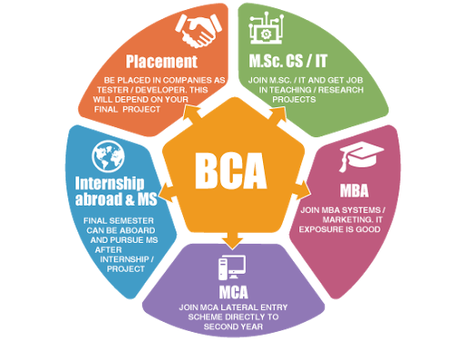

Bachelor in Computer Application (BCA) is an undergraduate degree course in computer applications. With the rapid growth of IT industry in India, the demand of computer professional is increasing day by day. This increasing growth of IT industry has created a lot of opportunities for the computer graduates.
Bachelor in Computer Application (BCA) is one of the popular courses among the students who want to make their career in the IT (Information Technology) field. The duration of the course is 3 years and divided into 6 semesters. It comprises of the subjects like database, networking, data structure, core programming languages like ‘C’ and ‘java’. This course provides a lot of opportunities to the students who are interested in computer field and wants to work in the IT sector as programmer or software developer.
Before planning for any examination it is very important to check out some basic but important points. One of the most important point before applying any course is the eligibility. It needs to be checked whether the candidate is eligible for appearing for desired course or not. The students who are interested in BCA as their higher studies must fulfill the following eligibility criteria:
The BCA is an undergraduate degree course in computer applications for duration of 3 years. After completing BCA, a student can go for MCA which is a master course in computer application and is considered equivalent to engineering course (B.Tech). The study period of BCA includes various subjects such as Programming in C Language (Basic and Advanced), Networking, World-Wide-Web, Data Structure, Advanced C Language Programming, Database Management, Mathematics, Software Engineering, Object Oriented Programming using C++, Visual Basic, Programming using PHP, JAVA, Oracle, Operating Systems, Web Scripting and Development, etc.
There is a huge scope in the field of BCA. One can do job or can go for higher studies after the completion of course. Self employment option is also available. You can do freelancing or develop your own software if you have that much skills. There are many software MNCs (Multi National Companies) which provide job to the BCA graduates. If candidate has a work experience and all the necessary required skills then he/she can hold good positions in MNCs.
The demand of IT professionals is increasing not only in India but also in abroad. After the completion of the course, the student can find a job in reputed IT companies like IBM, Oracle, Infosys, and Google. The student can work as a system engineer, junior programmer, web developer or as a system administrator. This field provides you ample opportunities to make your career not only in private sector but also in the public sector. The government organization like NIC, Indian Army, Indian Air Force and India Navy also recruit large number of computer professionals for their IT department. After the completion of the course a student’s work profile may include:
System engineer in the top companies like Infosys, Wipro, hp, Google.